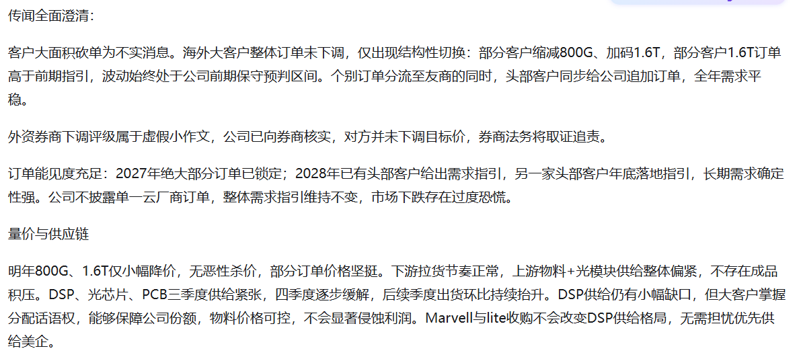
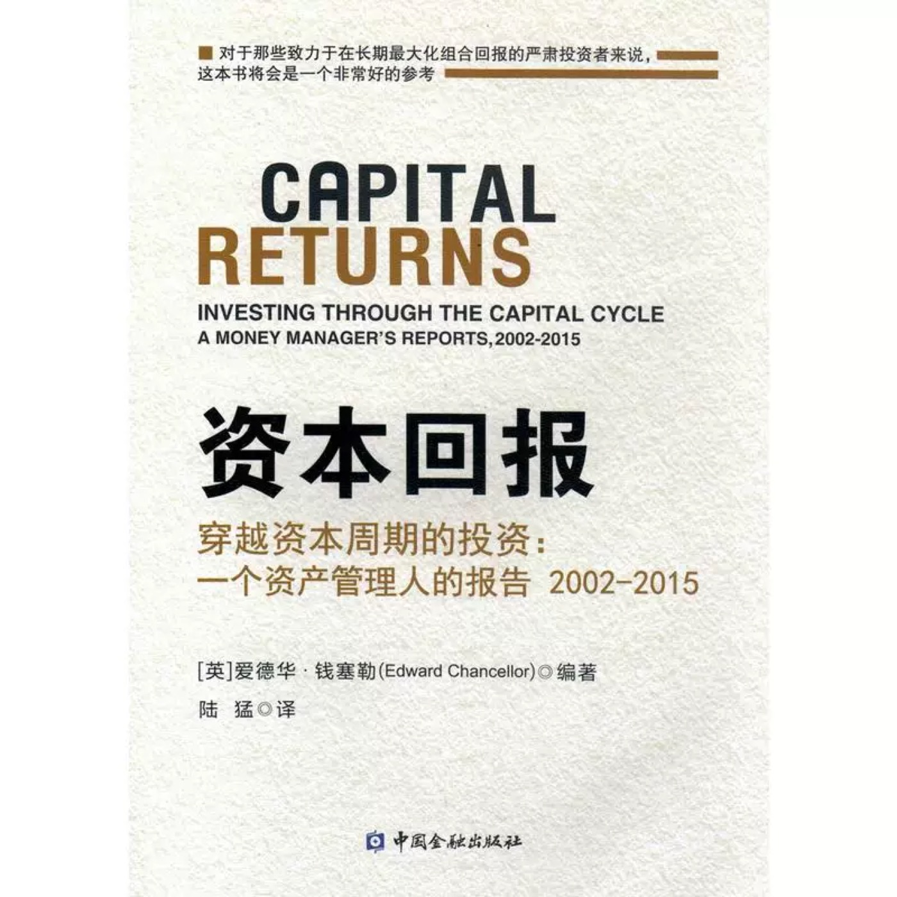
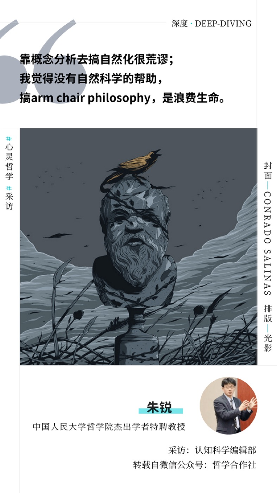
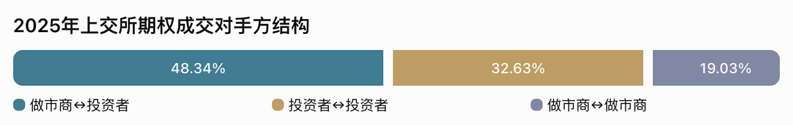

2026 实习生周报总览
暂无连续两周未更新提醒
跟踪尚不足两个完整周，最早 11.16 开始判定。
曾祥盛：本次无法读取最新文档，暂不判定是否连续未更新。
查看判定规则
从 2026.11.2 起，仅统计已结束的周一至周日；本周未结束不计入，只有标题、没有正文不算更新。每次抓取刷新时检查。
本周周报总览
按方向组查看摘要与状态，点击姓名或摘要打开飞书原文。
TMT
3 位同学本周已更新 3 位| 实习生 / 届别 | 周报摘要 | 更新状态 |
|---|---|---|
28届 | 本周已更新最后编辑 11.9 | |
28届 | 本周已更新最后编辑 11.9 | |
27届 | 本周已更新最后编辑 11.9 |
周期
1 位同学本周已更新 1 位| 实习生 / 届别 | 周报摘要 | 更新状态 |
|---|---|---|
27届 | 本周已更新最后编辑 11.10 |
产业
1 位同学本周已更新 0 位| 实习生 / 届别 | 周报摘要 | 更新状态 |
|---|---|---|
待补充 | 暂无周报内容 | 暂无法判定 |
周报更新追踪
从 2026.11.2 起 · 按文档编辑时间与周报标题日期判断
TMT · 周报全文
点击姓名打开飞书原文，点击卡片标题收起或展开内容。
20261102-20261108
本周主要在校考试和参与学校课程，关注了近期的新闻和消息并进行了一定思考
- 下周关注：Anthropic预计下周一IPO路演，预计10月ARR即将流出，检索到一份买方做的预测简单参考

- 短剧
- Facts: “抖音集团内部前三大应用变为抖音（10.29亿）、红果免费短剧（4.3亿）、豆包（4.19亿），红果完成对豆包的反超；短剧视频用户规模从1000万到4亿仅用不到3年，年复合增长率达443.1%。”
- 研究员观察到的Facts：
- 中老年人看很多短剧，此前是短视频等其他内容
- 短剧不仅仅面向中老年人，甚至部分年轻人也愿意看——原先以为只是三四线的下沉青年，但实际上大家对这种娱乐形式的接受度并没有很低
- 针对游戏赛事/时事热点，通过短剧的形式评论/形成故事/观点越来越多：e.g. 英雄联盟“世一上短剧”
- 本质上，游戏/短剧/短视频/社交媒体都在抢占注意力，短剧毫无疑问是对注意力占有增速最快的方向，而且长期可能成为其他注意力的衍生：小说->短剧，游戏赛事->短剧（针对选手赛场表现/编选手故事/etc.），短视频平台引流到短剧（抖音/B站/...），...
- 美国大选对数据中心建设的影响？
- 导火索：民主党拿下德州州长，德州 2030 年要上线美国算力的 1/4，新州长带着严苛数据中心监管上台
- 具体影响年份：28年项目可能冲击较大
- 原先市场预期数据中心许可可能在2026年12月恢复，现在暂停可能延续至2027年州议会完成立法，项目审批时间或额外推迟5至9个月
- 2027年建设不会整体逆转。多数项目已经开工并取得主要许可，但得州部分依赖现场燃气发电、尚未取得空气许可的项目，存在“机房建成但没有电力投运”的风险。
- 真正受到冲击的是2028年。美国2028年约62.2GW规划新增容量中，多数尚未开工；得州约占30%，审批延长可能使一部分项目从2028年推迟至2029年
- 当前风险主要是延期，已有融资、客户租约和建设投入的项目不会轻易终止，更可能通过修改设计、增加成本或调整投产时间继续推进。之前默认有钱买卡=能建，但现在拿许可证变成新的 bottleneck，已经通电的存量算力和拿到批文的数据中心变成了硬通货
- 后续走势：
- 数据中心自行承担基础设施成本，普通居民替大型数据中心承担电网扩建和闲置资产风险的模式难持续
- 数据中心税收优惠将加速退出。随着适合建设数据中心的土地和电力资源日益稀缺，地方政府不再需要通过大规模补贴吸引项目，开发商的成本将结构性上升
- 项目之间将出现明显分化：已经开工、许可齐全、电力落实的项目相对安全；尚未开工、依赖现场发电、缺少环境许可的2028年项目风险最高
- 观点
- 民主党的真实态度：① Anti-Trump表演给选民看；② 不至于真的Anti-AI itself，而是希望解决选民对AI发展衍生出的问题的诉求：电价上涨/过快发展导致的安全问题/对就业市场的冲击
- 比较担心AI链的后续：AI 应用与模型能力仍将持续发展，但算力基础设施受电力、审批、融资和库存约束，资本开支增速可能放缓，并逐步传导，形成 AI 技术进步与硬件产业链景气度背离
- CSP 为保自有现金流与自建机房利用率，优先甩掉不通电、高溢价的外部算力（e.g. MSFT10月 18日终止 Nscale 英国合同，11月5 日放弃续扩其得州协议，并陆续停售从甲骨文租用的老旧集群
- 新云厂面临融资与交付困境： 新云厂融资成本高企，部分发债利率超过 15%；同时面临机柜建成却无法通电、算力无法交付回款的问题，叠加服务器厂商要求高额预付款，容易形成“融资困难—交付延期—现金流恶化—采购收缩”的恶性循环
- 服务器订单存在下行风险： 数据中心审批趋严可能加速 CSP 砍单，预计风险最早于 2027 年一季度末至二季度显现。相比主要服务大型 CSP 的鸿海、广达，依赖中小云厂订单的戴尔、超微可能更早承压。重点跟踪 CRWV、戴尔财报及台系服务器厂商月度营收
- 存储拉货强度可能减弱：大厂存储安全库存已足以覆盖至 2027 年底，未来几个季度采购需求可能放缓，存储景气度面临回落风险
- AI：反蒸馏是否会拉大中美模型差距？
- Source：X观点/知识星球整理，摘录为主，研究员倾向于认为整体是有道理的
- 反蒸馏与国产模型追赶
- 蒸馏难度明显变高，短期蒸馏成本上升 5–10 倍，多则 20 倍。
- 替代方案效果都不如直接蒸馏：把一个问题拆成 10 个分别喂前沿模型再拼起来；拿摘要用其他模型做反向 rationalization；合成数据、数据生态采购。
- 曾有人认为可以通过第三方 CSP（如 Amazon）拿访问权限，但近期 Amazon 也出现较大封号潮。
- coding / agent benchmark 已刷到 90%+，再卷意义不大；明年下一个市场大概率是 AI for Science 或机器人，数据壁垒更高。AI for Science 真正做药的模型完全封闭（Claude 内独立模型层），只有药企合作能用，「连用都用不到，怎么蒸」；机器人基线数据更提取不出来。
- 反蒸馏的影响是多方面的：
- 措施：OpenAI / Anthropic 直接拒答或降级，订阅和非定向 API 都有大量反蒸馏措施，完整推理只有深度合作企业的 API 能拿到。
- 算力（认为是最大问题）：海外模型普遍 5–10T，学生太小听不懂老师，700B 蒸 3–5T 效果很差，最后回到预训练问题。训 3–5T 模型至少需要几万张 B 卡。
- 方向：coding 有代码可验证、agent 有 trajectory，好蒸；但前沿进步方向转向空间理解、computer use、视频生成，很难反向拿到完整数据。
- 结论：无论算力、数据还是训练方向，国产模型追赶越来越难，有买方认为没有长期价值
- 这也是我最大的想法，长期依靠蒸馏肯定不是一件好事
- RSI 与中美差距
- 算力差距在拉大：国内厂商等效 B 卡一万到几万张，海外明年单个 AI lab 训练算力或达 4–6GW。
- 反蒸馏后中美差距预期从 3–4 个月拉长至约 12 个月；若海外明年实现 RSI，可能进一步拉到 18–24 个月，认为极有可能。
- 研究员瓶颈：训练从 10B 逐步 scale 到 5–10T，数据配比、算力分配、开几条线都是「炼丹」，50 个研究员只能开 50 条线；RSI 后线数由算力决定。
- 数据瓶颈：公开数据约 35–50T token，未定义数据需 Mercor 这类公司帮助跨过阈值，之后可靠模型自己合成扩量，最终也收敛到算力。
- 国内 3T 左右模型算力够用，下一代 10T 左右影响较大。B300 国内价格近期反而上涨（Rubin ramp 后理论上应走平或下行）。
- 蒸馏成本：有数据称国内厂商蒸馏年开销数亿美元（未验证），成本上升 5–10 倍即十几亿到几十亿美元，对比前三家（DeepSeek、Kimi、智谱）总融资约 100–150 亿美元，影响不小。Chat 补充：有厂商一天蒸馏约 30 万美金 token，年化约 1 亿美金。
- RSI 关键是 verification：硅谷都在讨论如何在模型 / agent 无法自我验证的领域拿到 outcome feedback。coding 里主攻 build system 和 CI/CD 的 feedback loop 速度。
- 空间方向：从 DCC 软件（CAD、雕刻软件）到仿真、具身大脑，再到真实世界 simulation；老游戏里完整的物理碰撞系统可提供空间理解数据，看哪家 frontier lab 先拿到。
- 当前 RL 是挖 fifty-fifty 成功率的任务，再往前一步可能不是 RL，核心是模型生成的东西能否突破人类 verify 的极限且仍能被 verify。marketing 同理：素材好看不等于线上 performance 好，需要真实 outcome 数据。
- Marvell 与 Lumentum 的并购
- 1:4.5 固定换股比例，没有价格保护，新闻稿里 Lumentum 股东 24% 的收购溢价，是按照 10 月 28 日 Marvell 股价测算得出。交割在 2028 年上半年，未来 18 个月审批周期内，Marvell 每下跌 1 元，Lumentum 对应理论价值就会下跌 4.5 元
- 对 Marvell利空：
- 全股票收购会造成原有股东大规模股权稀释
- 10 亿美元年度成本协同只是目标，存在落地不及预期风险
- 全部整合收益要等到 2028 年交割完成才生效，中间一年半什么协同都拿不到；交易还存在监管审批延期甚至否决的尾部风险
- Lumentum利空：
- 没有现金对价，纸面 23.9% 收购溢价并不锁定，实际到手对价跟随 Marvell 股价涨跌
- 标的本身已经处在 AI 光器件景气高位，后续一旦行业景气回落，会直接影响交易价值。
第一次沟通会：
简单回顾了下每周做了什么
一些自己的思考
这周周报需要写一下每个人的计划，
日常第1周周报（11.2-11.8）-吴政泽
主要工作事项
- 持续跟踪市场，本周市场大盘有些许止跌回稳迹象，科创50本周上涨8%，传媒、电力设备10%上涨，但通信依旧下跌6%，结合大光比如旭创、新易盛三季报来看，11.6旭创披露主要客户订单已基本覆盖2027年，部分客户给出2028年需求指引，我认为还是继续跟踪需求指引转成实际交付的节奏，提前备料、扩产也会增加资金占用

- 继续跟踪北美capex与Anthropic IPO。本周媒体称其争取感恩节前上市、募资800-1000亿美元，规模还没确定。后续除了CSP的capex指引，还要看模型公司的现金消耗、采购承诺和付款期限，区分终端收入支持的需求与持续融资支持的需求。另外，多年算力采购承诺和云厂商capex可能对应同一批基础设施，不能直接相加；融资额也不能全部当作新增硬件订单，最终还是要看资金用途和实际交付
- 本周在学校里上课考试，主要是C++和QAM数量分析考试，其中QAM的复习让我能够重新梳理数理统计的内容，C++则要求把输入、步骤和边界条件想清楚，在本科的基础上更进一步换个角度理解，并且是英语授课和考试
研究/阅读心得&思考
- 课题之外的阅读思考：回归经典，读了《资本回报》这本书，这本书主要讲资本如何随行业回报进入、退出，以及供给变化怎样影响竞争。高利润吸引扩产，产能往往到需求转弱时才集中释放；低利润则迫使企业退出，逐渐改善剩余公司的经营环境。书里也很重视管理层的资本配置，包括扩产、并购、回购，以及激励机制如何影响这些决定。我的一个takeaway是，企业追求规模和管理层追求个人成绩，有时会压过回报本身；行业前景很好，也可能因为所有人同时扩张，最后谁都赚不到钱
- 还看了一本比较短的书《朱锐访谈录：科学是哲学的翅膀》。内容涉及他的求学经历、柏拉图研究，以及后来转向神经哲学、神经美学的过程。挺有意思的是，他为了读原典学习希腊语，后来发现这反而帮助自己理解医学术语，又继续补解剖学、化学和数学


- 公众号阅读思考：看了ALAB花旗TMT大会交流（https://mp.weixin.qq.com/s/_PV9-sP5P9ww94BEXhZVKg），他主要讲公司从PCIe retimer扩展到Scorpio交换芯片、CXL内存扩展和光互连，以及COSMOS软件如何配合硬件管理整个系统。此外还有Z Finance的Codex核心团队万字复盘（https://mp.weixin.qq.com/s/pGpv2EE215AEV-pFdsb4oA），他们从早期云端产品的配置、纠错成本让我想到，AI效率应该算到结果能被接受为止。投研里生成报告很快，但核对来源、口径和假设仍然耗时，并行Agent增加未必提高有效产出。我更关注人为干预、返工率和单位交付成本，以及用户愿意交出去的任务是否越来越重要。应用公司能积累的独特信息，可能是用户怎样定义问题、为什么否定结果、什么时候接受交付，这些比聊天次数更接近真实需求。
日常状态
- 我觉得这2个月以来，在高金上课，对我很大的帮助是全英教学，以及班上约一半国际同学带来的交流环境。课堂上直接用英文理解、表达和回应，能更明显地发现自己是语言不熟，还是问题没想清楚。不同背景的同学对职业、商业和经济问题有不同出发点，也让我意识到自己的经验有适用范围
- 在学校老师和同学的启发下，我想到一个有意思的问题，然后尝试去解答它——“AI到底会拉平还是拉大二级市场参与者的决策能力”。我现在还是更倾向于会把持续获取alpha的能力分化。虽然说读财报、搭model、整理纪要的成本下降，机构和散户在公开信息处理上的差距会缩小，但大家用相似模型分析同一批资料，结论也容易趋同，共识形成更快，留下的收益空间更少。差距会进一步转向独有数据、问题切入点和跟踪验证能力，以及最终的仓位和执行。马太效应可能继续放大，但未必简单按资金规模排序，研究流程清楚、反馈及时的小团队也可能受益。
接下来工作计划
- 继续跟踪海外及国内的大光、算力、存储、半导体设备龙头，关注国内和海外算力链的预期变化；然后抽空把Anthropic的招股书认真看过一遍。
- 下周还有几门期中考试，之后重新安排课程时间，保持市场跟踪和阅读习惯。并尝试继续做复盘类的思考
(2026.11.2-2026.11.6周报)
一、DRAM/NAND供需平衡表更新
- 更新AI服务器DRAM/NAND需求测算。 继续补充NVIDIA、Google TPU、AWS Trainium、Meta MTIA、AMD及华为各代AI芯片的出货量和存储配置，主要查了各厂商技术白皮书、OEM服务器规格书及产品发布资料。重点核对了HBM、CPU侧DRAM和本地SSD容量，对Google、Meta等未披露完整配置的机型，参考相近架构设置上下界。重新检查不同芯片代际的出货占比及单机存储需求，更新2025—2027年AI服务器DRAM/NAND测算结果。
- 调整AI服务器NAND需求口径。 之前模型中Local NAND和外部高速存储容易混在一起，本周重新梳理了计算节点本地SSD、HPS及其他存储的配置方式，核对不同平台的系统数量和单机容量，避免重复计算。同时检查企业级SSD出货量、平均容量与AI服务器存储需求之间的对应关系，对部分偏高的NAND假设进行了重新评估。
- 检查服务器DRAM/NAND季度需求数据。 逐项核对普通服务器与AI服务器的DRAM、NAND需求，重点检查2026Q3普通DRAM需求下降的问题，回溯服务器出货量、单机容量、AI服务器占比等参数的计算关系，并检查季度拆分与年度汇总是否一致，排查部分假设调整后产生的异常波动。
- 重新核查2027年全球存储原厂扩产情况。 逐家翻查三星、SK海力士、美光、铠侠、闪迪等厂商的资本开支、工厂建设及设备导入计划，对照TrendForce产能数据，区分规划产能、设备进场和实际量产时间。重点关注2026—2027年新增产能能否按期兑现，以及新产线爬坡速度是否被高估。
- 修正DRAM/NAND供给端产能假设。 根据逐厂扩产进度，对原模型中部分新增晶圆产能的释放时间进行调整。基准情景下，2027Q4 DRAM月投片由85.5万片下修至79.3万片，NAND由72.8万片下修至70.6万片，分别减少7.3%和3.0%。另外测算扩产延期情况下的供给变化，检查不同假设对2027年供需缺口的影响。
- 继续核对供需平衡表中的关键假设。 重点检查AI加速器出货量、单机存储容量、普通服务器内存配置及企业级SSD需求等参数，对影响结果较大的假设逐项回溯原始资料。同步检查各厂商供给加总、季度与年度数据衔接，以及不同NAND类型的供需分配，减少模型中参数口径不一致的问题。
二、存储合约价格与现货价格研究
- 梳理DRAM/NAND原厂的主要出货渠道和定价方式。 参考Bernstein产业链资料及厂商公开信息，整理三星、海力士、美光等原厂向OEM/CSP、模组厂、分销商供货的主要路径，区分原厂直供、长期供货协议、普通采购合约和渠道现货交易。结合产业链交易关系整理了一张价格形成机制图，重点弄清楚市场上看到的现货、合约报价分别对应哪一环节，以及哪些价格真正影响原厂收入和毛利率。
- 研究TrendForce、DRAMeXchange及ChinaFlashMarket的报价口径。 分别查看DRAM颗粒、内存模组、NAND晶圆及SSD的现货与合约报价，核对报价所对应的产品规格、交易主体及更新频率。发现渠道现货价格对短期库存变化反应更快，但不能直接对应原厂实际ASP；原厂与大客户之间的合约成交价通常不公开，TrendForce合约报价更多是观察行业议价水平的参考。后续跟踪需要把现货价格变化和合约端实际涨价区分开。
- 逐家查找存储厂商的长协覆盖率和合同条款。 翻查三星、SK海力士、美光、闪迪、铠侠、南亚科的财报、业绩会及路演资料，整理2027—2028年的长协覆盖情况。其中三星计划将60%—70%的产能分配给长期供货协议，SK海力士2027—2028年超50%的产能已由LTA锁定；闪迪FY2027/FY2028长协覆盖比例分别约为50%和67%，铠侠2028年超过50%的出货量预计由多年期长协覆盖。此外，美光已签订26项SCA协议，预计覆盖至2030年的累计收入超过35%。
- 进一步研究长协到底锁量还是锁价。 从厂商披露中整理合同期限、定价区间、价格上下限、保证金及采购承诺等条款。海力士目前的LTA通常为5年，价格在约定范围内随市场调整；美光部分SCA设置价格上下限，闪迪新合同同时包含固定和浮动价格条款。整体来看，各厂商都在提高长期协议覆盖率，但长协不等于固定售价，未来原厂的涨价弹性还需要结合具体定价条款判断。
- 整理历史价格数据，对比DRAM/NAND现货和合约价格涨幅。 从TrendForce数据库中匹配DDR4 8Gb、16Gb、DDR5 16Gb、SODIMM以及NAND TLC、MLC等不同规格，统一以2025年1月为基期，计算每个月现货和合约价格的累计涨幅，并进一步计算两者涨幅差。分别制作了DRAM和NAND价格差走势图，对比不同产品现货涨价领先合约价格的幅度及持续时间。
- 重点分析各品类价格传导的差异。 DDR4颗粒现货相对合约价格的涨幅差在2025Q4开始快速扩大，2026Q1达到高点，4—5月有所收敛后再次走阔，其中8Gb、16Gb颗粒表现最明显；但DDR5颗粒和内存模组并未同步出现同等幅度的价差。NAND方面，256Gb、512Gb TLC价差在2025Q4短暂转正，2026年4—7月重新转负，8月又出现反弹，而128Gb MLC持续走弱。说明不同产品的价格传导并不同步，后续需要重点观察DDR4合约端是否继续补涨，以及NAND TLC现货反弹能否持续传导至合约端。
三、美国中期选举对存储需求的影响
- 研究美国数据中心建设限制对实际装机的影响。 找到Modo Energy 11月5日关于美国中期选举及数据中心暂停建设的研究，整理各州受影响的GW规模。报告涉及约131GW潜在受影响项目，但预计实际建设受阻约11GW；考虑项目跨州迁移后，2030年美国累计建成容量净减少约3GW。名义受影响规模与实际减少量差距较大，短期对存储需求更多是情绪影响。
- 测算受阻数据中心对应的存储需求。 以NVIDIA DGX B200为基准，假设PUE为1.2、AI负载占比60%、AI服务器功率占比70%，按照3.5年建设周期分摊。按照Modo预计实际受阻的11GW计算，三者分别仅占1.43%、0.30%、0.18%。HBM受影响最为明显，但在考虑跨州迁移及项目重新申报后，预计实际需求冲击相对有限。
周期 · 周报全文
点击姓名打开飞书原文，点击卡片标题收起或展开内容。
11 月第 2 周
海外新型券商创新业务研究
1、PFOF 订单流交易零佣金模式
业务模式：投资者向 Robinhood 提交股票买卖订单，Robinhood 接收订单来选择执行的做市商，做市商向 Robinhood 支付订单流报酬并完成交易，这个过程中相当于做市商将买卖价差的一部分让渡给为其提供订单流的 Robinhood。
我国情况：A 股主要采用交易所集中撮合，证券公司接受客户委托后，按交易所规则代理交易，股票做市主要集中在科创板、北交所、创业板。欧洲已经走向相反方向，欧盟 MiFIR 禁止证券公司收取 PFOF，原有的过渡豁免已经在 2026 年6 月 30 日届满。
未来：涉及到市场公平、交易透明等一系列政策，A 股市场可预见的未来不会推进相关制度的变化。
2、客户闲置现金与现金管理
业务模式：美国部分券商已经能够通过客户的闲置现金赚取类似商业银行的存贷利差，通过合规的业务结构，利用客户闲置现金产生利息收入，而且这是一项规模非常大的业务。投资者把钱存进证券账户中，部分长期闲置的现金通过券商的现金管理安排存放到合作银行等，银行支付的收益一部分归平台，一部分支付给客户。
我国情况：证券公司客户的交易结算资金存放在商业银行，独立于证券公司自有资产。当前券商客户保证金余额管理产品，一种是相当于客户借钱给券商，券商通过资金运用利差来获益；一种是证券账户的货币基金自动投资业务，券商获取基金销售的渠道收入和客户粘性。
历史上，2004年前后，中国证券行业曾发生过比较严重的客户保证金挪用问题。当时一些证券公司将客户资金用于其他业务，最终在市场下跌时暴露巨大风险。
未来：当前的模式即客户资金自动购买合规现金管理产品已有基础。未来发展方向主要是提高自动化程度、流动性体验和产品丰富度。
3、保证金融资与证券出借
业务模式：保证金融资是券商向客户收入融资利率，客户将融入的资金继续投入到股票市场上去。证券出借是平台在客户同意后把符合条件的股票借给卖空或其他交易的机构，并收取借券费。
我国情况：和我国的两融业务基本类似，但中国的两融业务更多受到保证金比例、标的风控等多种限制，监管会逆周期调整杠杆。融券业务只能通过证券公司自有证券开展。
2026年11月初，证监会明确提出研究优化融资保证金比例、证券折算率及维持担保比例等指标，在风险可控前提下适度释放融资空间，目的转向适度释放杠杆，稳定市场流动性。（23 年 8 月份融资保证金比例从 100% 降到 80%，2026 年 1 月收紧升至 100%）。可冲抵保证金证券折算率提高已有持仓的保证金价值，释放存量融资能力。维持担保比例目前没有法定最低平仓线， 2026 年 11 月初，部分券商在市场下跌期间，将客户补足担保物的期限从当日放宽到次日。报道还指出，部分券商仍采用130%平仓线、140%—150%预警线作为内部风控安排。
未来：机构层面的融券恢复完善可能性较大，存在逆周期调整空间。散户股票出借涉及投资者保护等，未来可能性偏低。限售股出借未来恢复的可能性也偏低。
4、期权零售化
业务模式：投资者用较少的初始资金直接购买看涨或看跌期权，获得较大的方向性敞口。零售券商（Robinhood）的收入来自于期权合约佣金、订单流报酬等服务，其他散户和机构，或者专业做市商（如Citadel）可以成为对手方承担风险，通过报价价差和风险对冲赚钱。
我国情况：一种是场内股票 ETF 期权和股指期权，一种是券商场外期权。常规上市的股票类期权主要是 ETF 期权，ETF 实物交割。股指期权主要围绕指数，现金交割。场外期权是券商复杂衍生品业务的重要组成，券商根据要求设计并报价合约。我国缺乏广泛标准化个股期权市场，场外期权仅允许专业机构投资者参与，场内期权对合格个人投资者有硬性要求，部分对冲工具及证券借贷渠道受到限制。

2026年5月15日正式发布《衍生品交易监督管理办法（试行）》，将在2026年11月16日施行。主要管的是场外衍生品。
未来：2026年4月证监会深化创业板改革文件明确提出，丰富创业板相关ETF和期权品种，适时推出创业板股指期货。指数、ETF 期权有望进一步扩容，但短期全面放开面向普通散户的个股期权啊和高杠杆衍生品不太可能。
5、会员订阅
业务模式：Robinhood Gold的订阅未 5$/月 或 50$/年，权益包括更高的合格现金收益率、部分保证金融资免息、期权期货费率优惠、符合条件的退休账户奖励等。券商收订阅费，扣除利息补贴返现等成本，可以带来更多资金进入、提高融资余额、交易活跃度等和财务费管理等。
我国情况：目前没有跨银行、券商、信用卡和财富管理的一揽子会员体系。付费服务偏向行情、数据、研究工具等。《证券经纪业务管理办法》要求不得收取明显低于成本的佣金。
未来：专业投资工具和投顾订阅可行性高，收费类目中交易佣金、融资融券利息、资产管理费和投资顾问费，法理基础可以按照券商提供了投资策略、基金组合配置或咨询服务。
但高现金收益率、低融资成本存在障碍，涉及低佣金返现返佣，限制比较明显。对于提高保证金利率没有明确依据，。降低融资成本可能会被认定为诱导不适当的客户开展融资融券业务。
6、碎股、ETF 自动定投与养老投资
业务模式：降低股价较高的股票的投资门槛，ETF 自动定投带来的持续上升的佣金收入和更高的留存。
我国情况：普通竞价交易买入证券，申报数量一般仍须为100股（份）或整数倍，零股卖出则依照规则处理。ETF二级市场交易通常也是100份起。基金定投功能方面在支付宝、天天基金等已经比较普遍。
未来：个人养老金销售、基金定投的进一步发展是可以预见的，这些方向和长期资金入市相契合，也有成熟的制度基础。碎股交易存在创新空间，涉及证券所有权登记、分红表决资产隔离等问题。2023 年沪深交易所提出过拟调整为100股（份）起、以1股（份）为单位递增的方向，但是至今“100+1”方案并没有落地，科创板和北交所实现了 1 股递增。
7、消费返投 及 支付平台与投资相结合
业务模式：欧洲 Trade Republic的 Saveback功能，符合条件的刷卡消费按照比例产生返投奖励自动投入客户指定的定投计划。 日本的 PayPay App可以直接打开 PayPay 证券小程序完成开户和证券投资，通过支付余额或积分购买股票、ETF，其积分和余额还可以在不开证券账户的情况下随所选投资模拟组合的价值变化而变话，退出时获得的仍然是积分。
我国情况：2026 年 4 月发布、9 月 30 日实施的《金融产品网络营销管理办法》，将第三方互联网平台定位为金融产品的营销与信息展示渠道，为客户提供金融产品购买转接渠道时，应当跳转至金融机构自营平台。支付宝App可以在同一生态内购买基金，蚂蚁（杭州）基金销售有限公司是持牌基金销售机构，微信理财通销售的基金对应的是腾安基金。公募基金禁止采取抽奖、回扣、赠送实物、保险、基金份额等方式销售基金。
未来：通过互联网平台渠道进入持牌金融机构的体验会更便利，继续创新发展可预见。但支付 App 直接接受股票交易、返现诱导开户交易的可行性低。
8 、社交投资与自动跟单
业务模式：eToro上的 CopyTrader，CopyTrader可以自动按比例复制被跟随投资者的交易，用户可以自行设置复制金额、暂停或停止复制；复制功能本身不额外收费，但正常交易费用仍适用。优秀投资者公开策略和组合，其他用户查看历史表现并跟随，用户投资金并执行复制交易，平台沉淀交易收入提高留存。
我国情况：雪球已经实现社交和模拟组合，其他用户可以查看组合收益和投资逻辑。国内基金投顾试点允许符合要求的机构在客户事先授权范围内，代客户决定基金品种、数量及买卖时机并执行申赎。如富国基金投顾、蚂蚁“帮你投”、盈米“且慢”提供手动跟投和按策略的自动跟投。
监管层面，《证券投资顾问业务暂行规定》、《证券法》都有限制，禁止券商接受客户全权委托、未经委托擅自买卖证券及诱导不必要的交易。大 V 跟单模式可能会带来股价被推动拉升，操纵股价。而且 A 股整手交易限制会让小资金难以精确复制。
未来：社区公开展示组合和收益，持牌投顾建议+客户自主交易是完全可行的，专业基金投顾组合自动复制及调仓的试点有政策支持，发展确定性较高。但 普通 A 股账户自动复制短期可能性较低。
9、Robo-advisor和 AI 智能投顾
业务模式：智能投顾系统根据用户风险承受能力、期限和需求生成组合，定期监控持仓比例。券商按管理资产规模收取管理费。最典型的代表是 Betterment、Wealthfront、Charles Schwab 和 Vanguard。客户填写问卷—系统判断风险承受能力—自动建立 ETF 投资组合—根据规则再配合。美国已经允许投资者把一部分账户的持续投资决策权，正式委托给合规的投资顾问机构，再由算法自动执行。
我国情况：基金投顾试点允许符合要求的机构在客户事先授权范围内，代客户决定基金品种、数量及买卖时机并执行申赎。AI 辅助解释财报、分析持仓、总结市场帮助客户理解和判断已成熟应用。国泰海通君弘灵犀、华泰 AI 涨乐+省心投（智能问答、投资辅助+公募基金投顾）、蚂蚁帮你投由基金投顾试点资格的蚂蚁投顾提供基金投顾服务。
未来：2026年4月10日，证监会将《证券基金投资顾问业务管理办法》列入年度立法计划中“需要抓紧研究、择机出台”的项目。AI 辅助投资将会快速普及，基金投顾的自动化程度提高较具确定性。但 AI 自主管理不太可能被直接放开。
10、数字资产、加密货币和证券代币化
业务模式：Coinbase、Robinhood等，客户通过平台买卖虚拟货币，平台收取例如 0.5%的有效交易费用或点差，类似传统证券经纪。circle发行稳定币，用户更方便跨境转移和7*24使用数字美元，发行商用美元储备去获取利息收入。 证券代币化把资产和付款上链，降低结算对账成本和付款不交券的风险。
我国情况：2026年2月八部门通知明确，境内虚拟货币相关交易业务属于禁止性监管范围。2026年4月10日，香港金管局向碇点金融科技有限公司和汇丰银行发出首批稳定币发行人牌照。
未来：中国大陆未来面向普通投资者的虚拟货币现货交易，未来几年开放可能性很低。
11、预测市场
业务模式：Robinhood、Kalshi。推出对未来的预测合约，可以围绕更广泛的事件结果设计合约，例如经济数据、天气、体育比赛以及其他符合交易平台及监管要求的事件。
我国情况：涉及未经批准开展衍生品交易、交易场所管理，以及部分事件可能涉及的赌博监管问题。
未来：预测市场在我国大陆开发的可能性非常低。
12、B2B经纪基础设施
业务模式：DriveWealth本身持牌，其通过 API 提供经纪账户、交易处理、清算、托管及报告等服务。可以在消费金融平台等嵌入股票投资。美国允许金融科技公司通过持牌合作机构嵌入证券投资业务，实际承担经纪职责的持牌的券商，流量入口赚的还是 PFOF 的钱。
我国情况：同花顺、雪球、微信微证券作为流量入口，用户可以选择合作券商进行开户和交易，开户和交易由证券公司负责。主要
中国的 B2B的交易技术供应商有：恒生电子600570.SH、金证股份600446.SH、顶点软件。其出售给券商的是安全高效运行经纪业务的底层技术系统，赚的只是软件和技术服务的费用。
2026 年 8 月 28 日，中国证券业协会和基金业协会联合发布：《证券公司交易信息系统接入管理规范（试行）》，允许券商向合规经纪客户开放接口，例如某私募基金通过自身经过验证的交易系统接入发送指令。但是不允许普通互联网平台汇总公众订单传给券商。
人保/财险 开放日调研交流总结
一、非车险：寻找增长点
个人非车是财险的增长的核心，增量来源于 健康、家庭、消费等新场景。管理层强调个人非车险具有风险分散、大数法则适用性强的特点，当前盈利水平较好。未来增长空间相对明确，需要关注边际综合成本率变化。
数据：2020—2025年，中国财险个人非车险保费由191亿元增至558亿元，CAGR达23.9%；2026年前三季度实现保费503亿元，同比增长16.3%，贡献财产险保费增量的97%。
目标：以2025年558亿元为基数测算，2030年达到千亿规模对应未来五年CAGR约12.4%，管理层认为有挑战性但有信心达成。

增长点1：健康险：事后赔付转向事前干预 & 健管业务独立创收
围绕“医、药、护、研”构建健康管理平台，服务前移到疾病筛查、慢病干预和药品直付，从而降低赔付成本。企业健康险用健管服务降低疾病风险以及提高粘性，同时收取健康管理费用 公司布局药品产业链降低实际医疗成本，后续药品直付比例有望提升 带病体保险拓客：以往难承保客户纳入业务。
健康管理是在传统保险业务之外的附属业务，带病体保险处于起步阶段，可以长期关注其增长，以及该业务的进入稳定盈利的时间。
数据 ：健康管理基于目前 1600 亿元保费，公司认为该业务空间有 400 亿。院外特药：减少 2500 万损失（减损率 18%）
目标：①带病体产品计划：十年内实现100万名患者管理、撬动百亿元价值规模。
②企业健康险：理赔支出下降空间为 8%，法人客户联合拓展的健康管理服务收入达到6亿元（目前 25A健管总收入5亿元）。
③医疗险：“十五五”期间，公司计划针对20%的重点理赔客户开展干预，推动整体医疗险赔付率下降2%。如果这一目标实现，意味着每100亿元对应医疗险保费可减少约2亿元毛赔付支出。
增长点 2：科技险：当前起步积累阶段成本已优于传统法人险
科技险目前的成本已优于传统法人险，考虑其前期以积累数据、完善模型为主，相比同业主要的先发优势明显，2028—2029年风险减量效果逐步显现，2030年前后进入价值释放阶段，带来的盈利会更显著。盈利释放预计滞后于规模增长。
数据：2025年中国人保广义科技保险保费达209亿元，市场份额居行业首位。2026H1科技活动保险保费同比增长18.5%。
目标：公司预计“十五五”期间，乐观情景下科技活动保险保费突破100亿元，并带动广义科技保险迈向千亿规模。以2025年209亿元测算，2030年实现千亿规模对应CAGR约36.8%，显著高于个人非车险千亿目标所需的12.4%。
二、投资端
2025 年1 月，《关于推动中长期资金入市工作的实施方案》以及证监会提出力争大型国有保险公司从2025年起每年新增保费的30%用于投资A股，餐叙中提到实际工作当中30% 的标准偏硬性。叠加利率中枢下行、传统固收资产收益率下降，保险资金增配权益的趋势较为明确。
新准则下，TPL 变动直接进当期损益，高股息OCI资产既能提供经常性投资收益，又能降低短期市场波动对净利润的冲击。2026H1中国财险FVOCI股票占股票投资的57%，高于集团整体43%的水平。在权益配置中枢抬升的过程中，管理层表明保险资金会进一步把权益资产从两边（OCI 分红和 TPL 成长）向中间（TPL 价值）靠拢，27 年TPL 价值份额可能上升。

当前OCI 分红账户目标股息率 5%，要求长期跑赢红利指数。TPL 价值账户股息率目标 3%，追求更高的隐含回报率。 TPL 成长及时兑现浮盈收益。

潜在问题
非车险盈利中枢：2026 年前三季度非车险 COR 达到 98%，明显好于 25 年 100.8%。如果剔除季节性大灾、准备金重估以及险种结构变化，未来非车险可持续的综合成本率能否稳定在 98% 左右？
个人非车险的盈利能力：公司此前提出个人非车险要从 2025 年的 500 多亿元保费规模向“十五五”期间超过 1000 亿来发展，今年上半年个人非车险的增长也比较快，达到 18%以上。目前个人非车险业务的 COR 在这样快速增长的目标下，能否维持历史上较好的盈利效率？（25H1 披露 89.9%）
法人业务：公司过去法人业务整体承保盈利能力相对较弱，今年借助非车险综合治理，上半年已经有 6% 左右的比较明显的改善。目前报行合一的费用改善有多少已经反映在业绩中？随着后续险种综合治理的逐步完成，2026年下半年及2027年是否仍有进一步释放的空间能够实现承保盈利？
车险 COR 的底部：2026 年前三季度考虑到大灾，车险 COR 仍然维持 94.3%，已经处于较优水平。未来人伤赔付标准提高、新能源渗透率上升，管理层如何看待未来 3-5 年的车险常态 COR？当前的低成本率有多少是可以持续的？
分红：公司的分红政策追求 全年 DPS 长期稳定增长，但考虑到新准则 TPL 账户对利润影响比较大，2026 年净利润同比来看压力比较大，公司当前的DPS是否还能保持稳定增长？
投资：Q3 的投资波动对单季的利润影响比较大，未来会希望把权益资产的利润表波动控制在什么程度？FVTPL 权益仓位会不会结构性下降？未来对长期投资收益率和单季利润稳定性的综合战略是什么样的？
备查数据

2025 年，财险、寿险、健康险三家子公司分别贡献 69.8%/18.7%/13.0%。
1、2026 年前三季度，车险保费 yoy+0.1%，车险当中新能源汽车的增长yoy+31%，是增长的主要动力，新能源车险在车险保费里的占比超 22%，2024 年起新能源家庭自用车实现承保盈利。
2026 年前三季度，财险保费仅增1.7%，但承保利润增长 11.3%，承保盈利能力带动。人保归母净利润同比 -32%，但同期财险承保利润+11.3%。
2026 年上半年，财险的原保险保费份额市场占比 33%。
2、财险的优势：综合费用率低，2023-2025 年的赔付率上升（70.4%->74.4%），但综合费用率下降更多（26.5%->20.9%）。意味着综合费用率-1.6%。主要来自于车险综合改革和“报行合一”监管。
报行合一
3、非车险 yoy+3.2%，车险的增长动力明显偏弱。非车险整体依旧不盈利。
11 月第1周
中信证券 的业绩稳定性来源——自营投资业务
2016 年以来 TTM 归母ROE 历史 P10% - ROE 标准差，纵轴代表历史盈利下限水平，横轴代表 ROE 的波动。
中信证券的历史P10为7.18%，在22家可比券商中排名第一。波动率处于低波动梯队，ROE 标准差为 1.62%，明显低于样本中位数 2.50%。在大型券商中仅仅略逊于华泰证券。中信证券兼具较低盈利波动与较高盈利下限，历史ROE呈现出区别于多数同业的稳健性特征。

过去 10 年行业普遍变得更稳定，中信证券属于一直以来的高下限，低波动的“好学生”。在不同的周期阶段中始终维持着同业第一的盈利下限。

从时序上看，中信的相对盈利优势具有很强的持续性， TTM 归母 ROE 在 2017 年之后 连续 39 个季度高于行业中位数，其中33 个季度高于行业 P75 水平。2026Q3中信的绝对ROE环比回落，但相对优势仍然保持高水平。

在行业整体 ROE 处于低位时，如 2018 年、2024 年，中信在行业低景气时依然保持较高的资本回报，期间ROE中位数为7.28%，居于行业首位，明显领先于行业低景气ROE中位数4.54%，具高盈利下限与较强抗周期韧性。

在全行业 ROE 同比下降的区间中，下行捕获率反映了 ROE 的抗跌水平。当行业ROE下降1个百分点时，中信ROE的历史同期下降幅度仅约0.58个百分点。中信位于下行防御能力第一梯队，在大型券商里排名第一，全样本中排名第三。相比之下，华泰为0.65、招商为0.87、广发为1.03、国信为1.56。

综合考虑上行捕获和下行捕获来看，其上行捕获率71.25%，下行捕获率57.53%。上行捕获强于下行捕获，属于优质的防御型券商。

从 beta 来看，中信证券β为 0.72，R2 为 76%，中信仍具有较强的行业周期关联性，但变动幅度相对温和。

中信证券经营波动从收入端到归母利润端均处于全行业较低水平。中信证券营业收入、营业利润及归母净利润波动率分别为6.29、3.92、2.71个百分点，在22家可比券商中分别位列第5、第5和第4低。

一般来说，从波动传导看，收入到归母净利润的波动率会逐级压缩，压缩能力反映了企业平抑收入波动、稳定贡献利润的能力。
中信的相对优势体现在其营业收入本身波动较小的情况下，从收入到利润的压缩能力依旧保持较强能力。尤其是营业利润到归母净利润的波动压缩能力更强。

相较华泰证券，中信收入及营业利润波动略高，但最终归母利润波动反而更低，反映了公司整体在所得税、少数股东损益等营业收入外因素的实际缓冲。

中信证券的五项业务收入份额与波动贡献份额高度接近，而华泰、招商、广发、国信等券商均存在较明显的业务波动贡献集中现象。左边是各业务对营收的贡献，右边是各业务对总体波动的贡献。

中信并没有出现某项业务的波动贡献显著超过其收入份额的情况，份额和波动基本匹配。特别是投资业务收入占比已达35.50%，但波动贡献并没有进一步放大。
相比之下，华泰证券和广发证券投资业务的波动过大，其波动贡献较收入份额高出6.46% / 13.01%。国信证券手续费业务波动较大，波动贡献较收入份额高出13.12个百分点。

左侧衡量各项业务的绝对波动率，右侧衡量相对于自身业务规模的波动程度。中信的稳定性优势集中体现在手续费、投资和利息净收入等核心业务。其收入稳定性很大程度上来源于内部各个核心业务本身波动较小。

尤其是手续费和投资业务这两个合计贡献超八成的核心业务，中信在这两个业务上波动控制非常出色。

回顾历次市场逆风时期：
2018 年市场逆风时期，以华泰作为对照，中信证券归母盈利降幅显著低于华泰，主要得益于投资业务相对较小的负向冲击，以及营业支出调整与其他利润项目的共同缓冲。分业务看，中信与华泰投资业务净收入分别减少37.67、47.09亿元，对期初权益的负向贡献分别为2.51、5.39个百分点，投资业务冲击差异是两家公司盈利韧性分化的首要来源。

中信营业支出形成 1.24 个点的正向贡献，在 18 年逆风期对成本的控制明显强于华泰的 0.72%。

2022 年时期，中信的归母利润降幅在21家有效券商中排名第4小，较四家头部同业平均少下降2.05个百分点。中信经历投资、手续费及其他收入下滑之后，依靠营业支出减少等因素，将归母利润的标准化降幅控制在0.85个百分点。印证了其投资业务的韧性，以及成本控制的能力。
相对其他头部券商，其在投资、利息净收入和营业支出的韧性尤其明显。


2022年大部分券商都遭遇投资收入下降，中信投资业务标准化负贡献为1.92个百分点，不仅低于四家头部同业平均的3.66个百分点，也明显小于全行业有效同行中位数的4.26个百分点。

2023 年下半年到2024 年上半年期间，中信证券的手续费带来了超出同业平均的拖累。


中信证券2024年逆风期手续费业务的相对弱势主要由投行业务拖累（yoy -52.7%)，其本来的优势传统业务在一级市场萎缩环境下有很高的盈利敏感。横向看中信投行业务调整幅度明显大于头部同行。

过去三轮逆风期，中信在自营投资和成本控制方面展现出了相较于其他券商的优势，核心业务在行业整体下行区间保持韧性，是重要的正向缓冲。相对而言，中信证券的投行业务的规模优势具有一定周期性特征：在一级市场景气上行阶段有利于利润释放，但在市场调整、融资活动收缩时，也可能形成更大的收入下行敞口。
我们来详细一下自营投资 和 成本
过去5 年，券商收入结构中投资业务的占比明显提高，可比的18 家券商合计，其投资业务净收入占比近 4 成。中信证券的比例还要更高，已经形成了相对更高的投资收入依赖度。

相较于 10 年前，营收TTM上涨了 1.79x，投资收益已经扩大到了 3.31x，投资收入占比提升主要来源于自身收入规模扩张的驱动。

中信的投资业务的逆风韧性来源于两方面，2022 年投资的优势主要由收益端贡献，收益率强于同业 1.76%。2024 年收益率承压时，规模扩张又快于同业 0.70%，抵消了收益率端的回落。

中信自营投资收益率过去七年平均领先其他头部券商，投资杠杆也高于其他头部券商。当前中信证券每 100 元归母股东权益对应 293 元金融投资资产，产生 11.04 元投资业务收入。

中信长期具备较高的投资收益率中枢，是盈利韧性的重要来源，支撑其自营收入的长期基本盘。

从2023年末以来，中信OCI资产累计增长约1,274亿元，其中约90%的净增量来自其他权益工具投资；但2026年初以来，OCI净增量几乎全部来自其他债权投资。

成本控制方面，我们发现这几轮逆风期，中信的主动费用收缩并不大，主要是减值改善和其他业务成本的改善。

SFISF（证券、基金、保险公司互换便利）
事件
11月2日上午，金融管理部门围绕进一步完善证券、基金、保险公司互换便利（SFISF）、股票回购增持再贷款政策工具分别召集相关金融机构召开座谈会。同日，中国人民银行公告显示，央行将于11月3日开展证券、基金、保险公司互换便利操作，互换期限1年，可视情展期。本次第三批目前有31家证券、基金公司申报需求，申请额度超过1000亿元。要求相关机构“报足、做实”工具操作量，特别强调拿到央票后尽快融资、开展投资。另外，近期证监会拟对为维护公司价值及股东权益所必需而回购股份（简称护盘式回购）作调整优化，正在研究融资保证金比例、可冲抵保证金证券折算率等指标的逆周期优化。

政策机制：SFISF通过“以券换券—质押式回购融资—权益投资”的方式，将券商持有的股票、ETF、债券等资产转化为融资能力。本质上是央行帮助券商升级抵押品，货币市场提供现金，券商负责投资和承担风险，理论上依然是券商增加权益风险敞口的杠杆投资行为。
操作特征：本次操作距离上次已逾 22 个月，从节奏和时机上来看具有明显的逆周期择机使用的特征。过去两批 1050 亿元已经多次展期，实际上是作为长期资金支持。
参与情况：2024 年首批 20 家机构的申请额度超 2000 亿元，本次 31 家超 1000 亿元，实际操作额有待观察。2025 年券商分类评价已经将积极参与 SFISF 相关工作纳入加分项，并增加自营权益投资相关评价指标，本次监管进一步强调“报足、做实”，机构存在监管政策激励。券商一般都会尽可足额顶格申报。
政策优化：互换费率本身比较低（20bp-10bp），下降带来的直接费用压降并不高，降费率主要是促进实际投资，缓解内部风控和投资约束。
历史复盘

第一批： 2024年9月24日央行首次提出SFISF，10月10日正式创设5000亿元额度，市场开始关注政策资金的潜在配置方向，当日红利、中字头、银行等板块走强，科技成长板块调整。10月18日首批20家机构获批，申请额度超2000亿元，操作细则及回购增持再贷款同步落地，当日上证指数上涨2.91%、创业板指上涨7.95%。10月21日首次完成500亿元操作，中标费率20bp，但当日券商板块并未领涨。10月25日媒体进一步披露，工行、农行等银行已参与相关质押式回购交易，政策融资逐步落地。
第二批： 2024年12月31日央行预告第二次操作，备选机构池扩大至40家；2025年1月2日完成550亿元招标，中标费率降至10bp，同时扩大合格质押品范围并降低质押登记费用。当日上证指数下跌2.66%、证券板块明显调整，次日市场继续下跌。相比首次推出时，市场对工具机制已有较充分认识，且首批500亿元实际操作规模与超2000亿元申报需求的差异已得到体现，新增操作的政策信号效应相对有限。

市场资金结构分化，逆周期承接需求
10 月以来，融资余额-1838 亿元，股票 ETF 净申购+3627 亿元，杠杆资金在撤退，ETF 资金逆势流入。SFISF 和股票回购增持贷款、及推动主动ETF加快建仓等方式，分别增强金融机构、上市公司及基金产品的权益购买能力，意在缓解市场下行时的资金承接压力，引导形成逆周期买盘。

融资成本较前两次明显下降。
11 月 2 日R007为1.41%，DR007为1.36%，两者利差约5bp（前两次利差为 23bp/15bp）。假设本轮互换费率维持10bp，券商SFISF 开展7 天回购的融资成本可能在 1.5% 左右（相比前两次-55bp/-42bp）,有利于改善权益投资的持仓经济性。
行业
短期估值修复先于盈利兑现。11月2日，中证全指证券公司指数上涨4.60%，部分券商个股涨幅超过6%，反映Q3 业绩的利空出尽和市场对稳市政策的积极预期。但考虑到SFISF规模、成本及回报，对行业短期利润的直接贡献预计相对有限。本轮政策对券商板块的影响首先体现为稳定市场预期、缓解流动性尾部风险及降低风险折价，推动估值修复；后续若市场逐步企稳、交投活跃度恢复，才有望改善行业盈利与ROE。
资金投向：Q3自营波动加剧，政策资金或更偏向稳健配置。 从前两批SFISF实际投向看，资金主要配置指数成分股及股票ETF，部分券商用于长期OCI权益投资、做市及方向性投资。本轮监管强调资金尽快落地，考虑到大规模资金配置的效率与风险控制要求，预计流动性较好、交易容量较大的宽基ETF及大市值股票仍是主要配置方向。
从券商资产负债表看，2026Q3行业交易性金融资产环比下降3%，其他权益工具投资及其他债权投资分别增长8%和2%，呈现出交易性资产收缩、OCI资产扩张的结构性特征。考虑到Q3自营投资收益大幅回落，且前三季度已积累较高盈利，券商Q4可能更重视全年利润稳定性及风险敞口管理，继续扩大高波动方向性投资的边际意愿或有所减弱。
监管资本：行业整体充裕，头部券商资本使用效率改善更具意义。2026H1行业平均风险覆盖率约285%、净稳定资金率约164%，整体远高于监管预警线，并不存在普遍性资本不足。 SFISF通过改善存量资产融资能力，并降低符合条件的专项权益投资对监管资本及稳定资金的占用，可能在不同比例增加监管资本消耗的情况下支持权益投资扩张。
产业 · 周报全文
点击姓名打开飞书原文，点击卡片标题收起或展开内容。